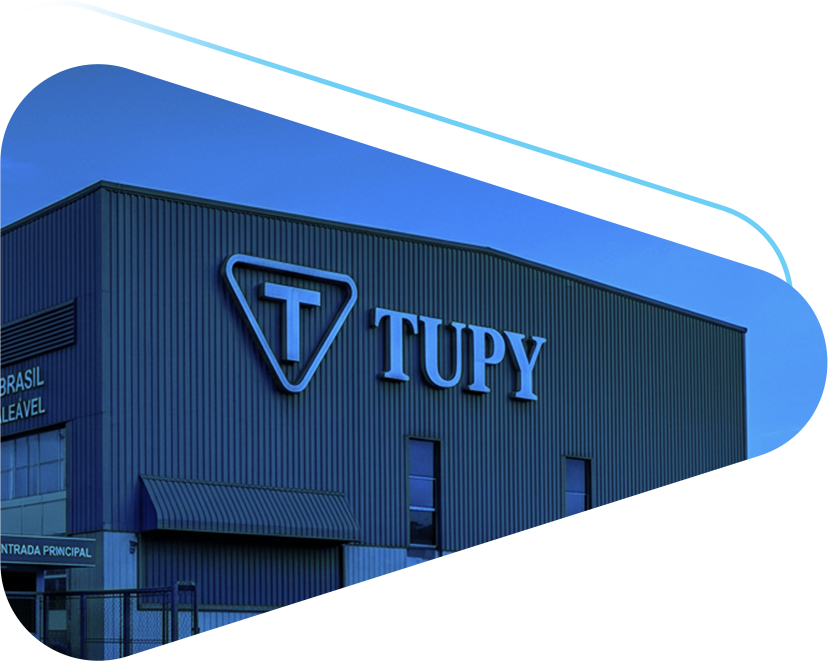
شرکت توپی یکی از پیشرفتهترین ریختهگریهای آمریکای لاتین در تولید بلوک موتور، سرسیلندر و قطعات چدنی صنعتی است. محصولات توپی به دلیل کیفیت بالا و دقت مهندسی، در صنایع خودروسازی و موتورهای دیزلی استفاده میشوند. این شرکت با استفاده از همان فناوری و آلیاژهای پیشرفته، اتصالات دندهای و صنعتی خود را تولید میکند. اتصالات توپی به دلیل استحکام بالا و کیفیت ممتاز، در پروژههای صنعتی و تأسیساتی مورد اعتماد هستند.
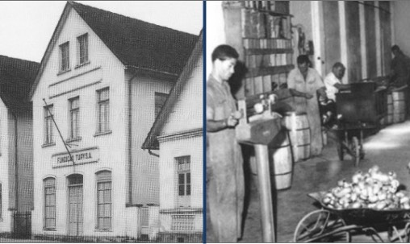
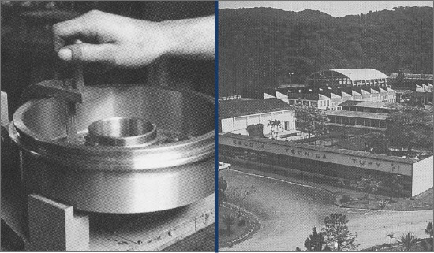
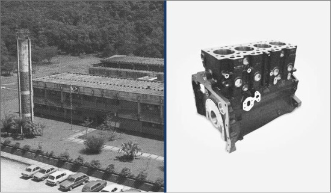
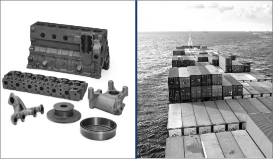
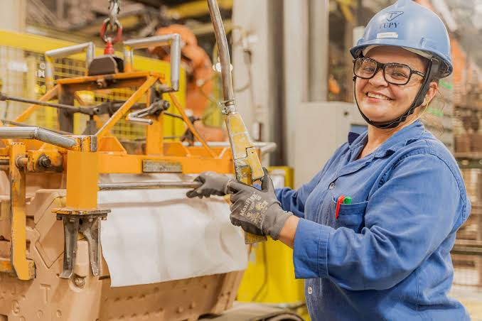
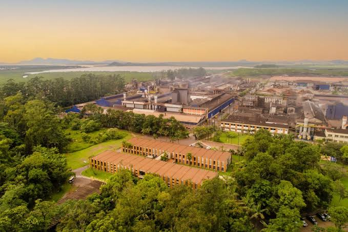
سرمایهگذاری در فناوریهای مهندسی، اتوماسیون تولید و سیستمهای پیشرفته کنترل کیفیت
توپی به یکی از بزرگترین صادرکنندگان قطعات ریختهگری خودرو و ماشینآلات صنعتی تبدیل شد.
بخش عمده سهام توپی خریداری شد و این شرکت کارخانه ریختهگری مرسدس بنز را نیز به مالکیت خود درآورد.
1963 – توپی کارخانه جدیدی در برزیل افتتاح و تولید قطعات تراکتور را آغاز کرد.
1976 – تولید بلوک موتور و سرسیلندر در کارخانه جدید Joinville برزیل آغاز شد.
اولین قرارداد تأمین قطعات خودرو با شرکت فولکسواگن برزیل منعقد شد
شرکت توپی توسط شرکای Albano Schmidt، Hermann Metz و Arno Schwartz تأسیس شد، با هدف تولید اتصالات لوله که تا آن زمان در برزیل تولید نمیشدند
شرکت توپی توسط شرکای Albano Schmidt، Hermann Metz و Arno Schwartz تأسیس شد، با هدف تولید اتصالات لوله که تا آن زمان در برزیل تولید نمیشدند
اولین قرارداد تأمین قطعات خودرو با شرکت فولکسواگن برزیل منعقد شد
1963 – توپی کارخانه جدیدی در برزیل افتتاح و تولید قطعات تراکتور را آغاز کرد.
1976 – تولید بلوک موتور و سرسیلندر در کارخانه جدید Joinville برزیل آغاز شد.
بخش عمده سهام توپی خریداری شد و این شرکت کارخانه ریختهگری مرسدس بنز را نیز به مالکیت خود درآورد.
توپی به یکی از بزرگترین صادرکنندگان قطعات ریختهگری خودرو و ماشینآلات صنعتی تبدیل شد.
سرمایهگذاری در فناوریهای مهندسی، اتوماسیون تولید و سیستمهای پیشرفته کنترل کیفیت
هدف توپی ارائه راهکارهای مطمئن، نوآورانه و مطابق با بالاترین استانداردهای جهانی در صنعت اتصالات و قطعات چدنی است.
این شرکت با بهرهگیری از فناوریهای پیشرفته، مهندسی دقیق و کنترل کیفیت مستمر، در تلاش است محصولاتی ایمن، بادوام و قابل اعتماد برای پروژههای صنعتی، ساختمانی و زیرساختی در سراسر جهان تولید کند.
تعهد توپی به کیفیت، توسعه پایدار و رضایت مشتریان باعث شده است که این برند در بسیاری از پروژههای بینالمللی به عنوان نامی معتبر و قابل اعتماد شناخته شود.

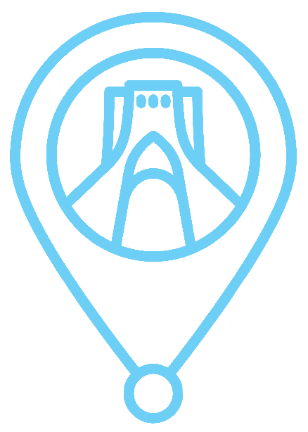
محصولات توپی ساخت کشور برزیل، بیش از ۴۰ سال است که در بازار ایران حضور دارند و به عنوان یکی از برندهای معتبر و قابل اعتماد در حوزه اتصالات صنعتی و تأسیساتی شناخته میشوند. کیفیت جهانی، دوام بالا و تولید مطابق با استانداردهای بینالمللی باعث شده است که این محصولات در بسیاری از پروژههای ساختمانی، صنعتی و زیرساختی کشور مورد استفاده قرار گیرند.
حضور گسترده در بازار ایران، همراه با شبکه فروش و تأمین مناسب، دسترسی سریع و پشتیبانی مطمئن را برای مشتریان فراهم کرده و توپی را به یکی از انتخابهای اصلی فعالان این صنعت تبدیل نموده است.

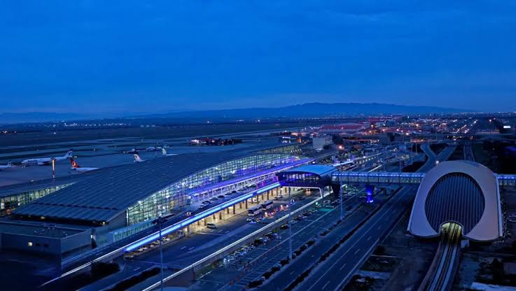
تهران شهر فرودگاهی امام خمینی
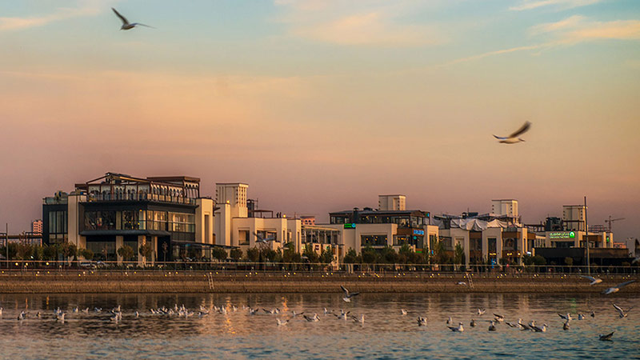
تهران بام لند
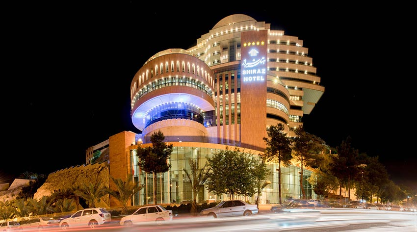
شیراز هتل بزرگ شیراز
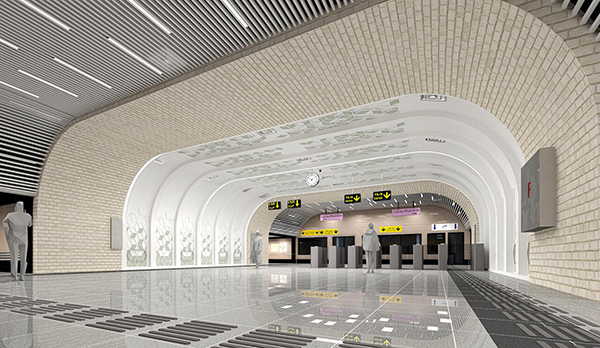
متروتهران
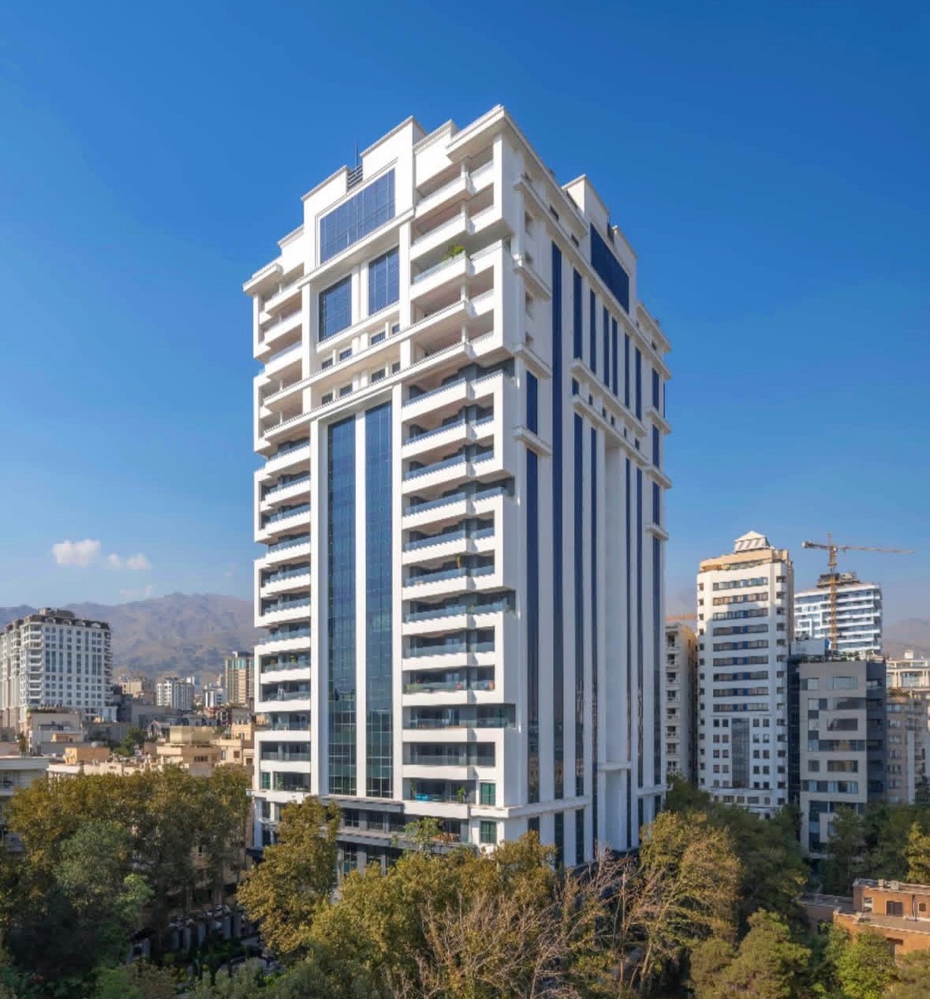
متل قو مجتمع الماس خاورمیانه
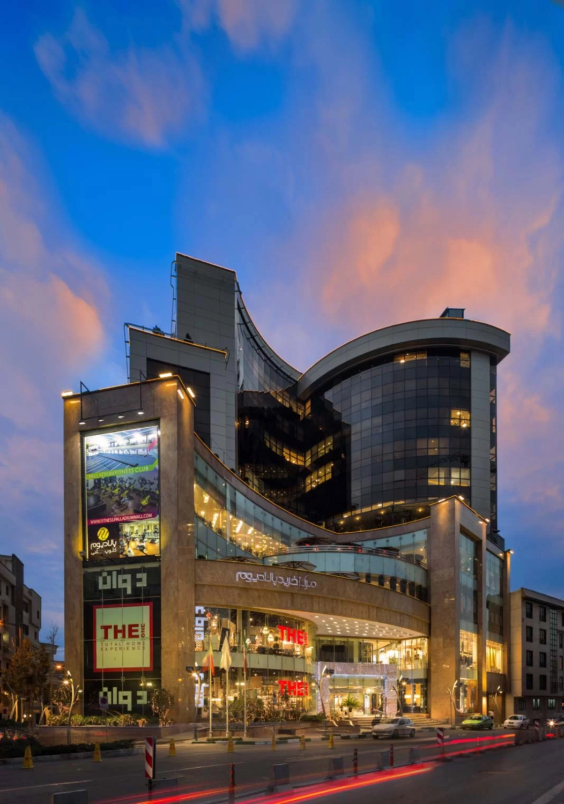
تهران مجتمع تجاری پالادیوم
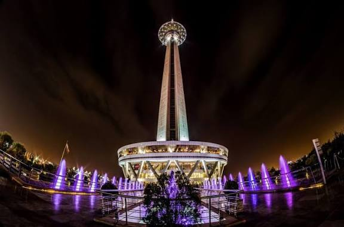
نام پروژه
نام پروژه